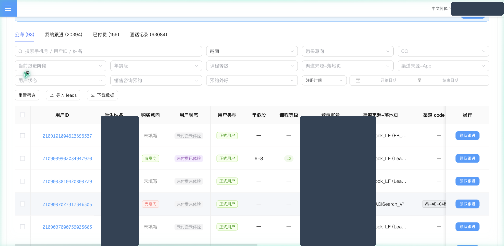
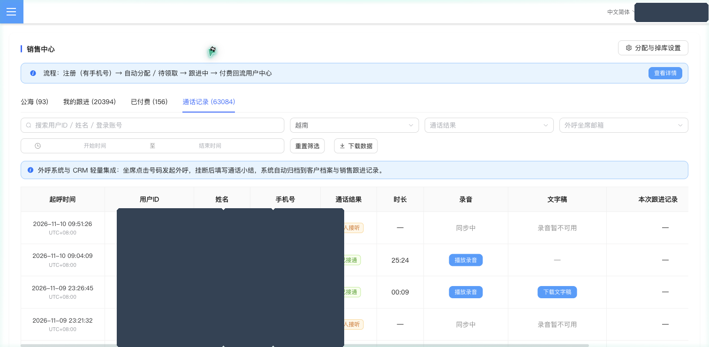
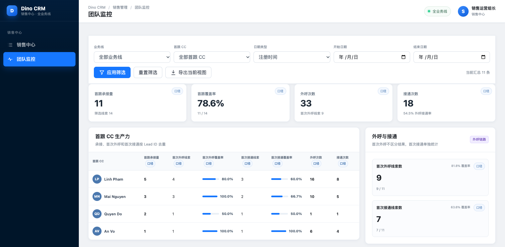
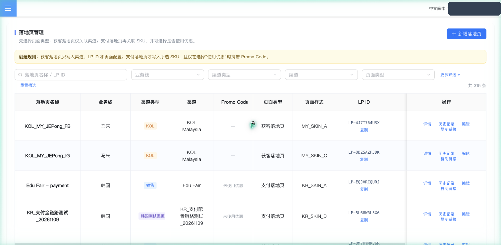
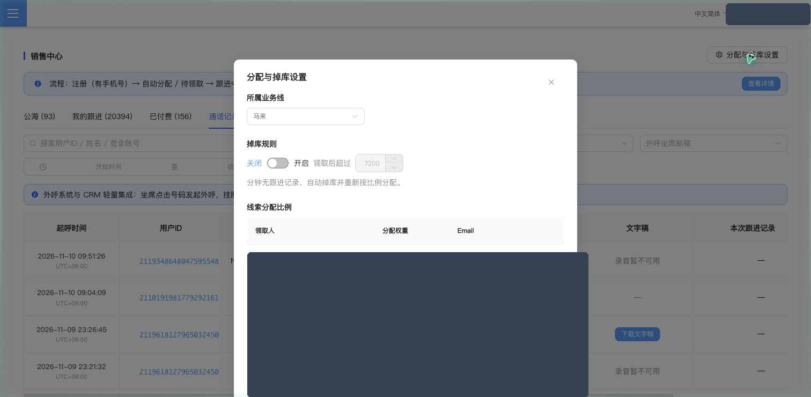

Dino CRM 使用手册
按任务和角色查找操作说明：一线伙伴跟着步骤做即可，管理员与超管的配置篇请切换角色筛选查看。
当前筛选没有匹配的手册，换个角色或关键词试试。
G-00
快速开始：登录、角色与常用任务
销售专员销售组长管理员超级管理员
首次进入 CRM 先完成登录，再按角色选择常用任务；同时了解业务线范围和敏感数据操作的基本要求。
登录 CRM
- 打开 CRM 后台，点击右上角 登录。
- 输入
@dinoai.ai 企业邮箱，点击 发送验证码。 - 输入邮件中的 6 位验证码，点击 登录。
- 登录成功后，左侧菜单会按账号角色和业务线权限显示可用功能。
英文页面会保留原文：
- Open the CRM backend and click Log in in the top-right corner.
- Enter your
@dinoai.ai email and click Send code. - Enter the 6-digit code from your email and click Log in.
- The left menu shows only the modules allowed by your role and business lines.
先选择你的工作路径
| 你的主要任务 | 建议阅读顺序 |
|---|
| 销售领取线索、外呼、跟进 | S-00 → S-01 → S-02 → S-03 → S-04 → S-05 |
| 销售组长分配线索、查首跟产出 | S-00 → A-02 → S-04 → S-06 → D-01 |
| 营销 / 运营配置投放和商品 | M-00 → M-01 → M-02 → M-03 → M-04 → M-05 |
| 用户或订单问题排查 | U-00 → U-01 → O-01 |
| 管理角色、成员和数据范围 | A-01 → A-06 → A-03 → A-05 |
| 看经营结果和转化 | D-01 |
进入页面后怎么确认权限
- 左侧看不到菜单：优先检查角色权限和业务线范围（见 A-01、A-06）。
- 能看到菜单但看不到数据：检查账号绑定的业务线；没有匹配数据时先确认筛选条件。
- 只能看本人线索：普通销售通常只看本人跟进；组长和授权管理员可查看范围内的全部销售线索。
- 直接访问页面链接仍被拦截：说明后端权限正确生效，不能通过复制链接绕过权限。
敏感数据操作
- 手机号、短信验证码、通话录音、订单明细和导出都属于敏感数据。
- 验证码只用于正在处理的用户登录问题；不要转发、截图或用于其他账号。
- 添加会员、修改订单归属、导出数据前，先确认用户、业务原因和授权范围。
- 角色权限决定能操作什么，业务线范围决定能操作谁的数据。
- 不确定时先在操作日志中核对配置来源（见 A-05）。
遇到问题
- 页面无数据：先重置筛选，再确认业务线和角色。
- 外呼不可用：检查坐席绑定、国家线路和浏览器网络（见 S-02、A-04）。
- 用户状态与订单不一致：记录用户 ID、订单 ID 和时间，按 O-01 核对订单与会员信息。
- 权限或数据范围异常：记录当前账号、业务线和页面地址，交给系统管理员处理。
使用这份手册
- 顶部角色按钮过滤不适用的章节。
- 搜索框可搜索任务、字段和问题关键词。
- 侧栏切换中英文；当前手册版本和历史版本位于左上角。
最后更新 2026-11-10
D-01
查看管理看板与跟进转化
超级管理员管理员
按业务线、CC 和日期查看注册批次的六环转化、五个跟进转化指标、销售跟进和支付结果。
页面结构
入口：左侧菜单 → 管理看板。
| 页签 | 看什么 |
|---|
| 转化总览 | 六环转化、线索到付费转化率、五个跟进转化指标 |
| 销售跟进 | 当前线索库存、外呼、预约、跟进和原因分布 |
| 支付结果 | 支付人数、订单数、实付金额、AOV 和币种 |
查看转化总览
- 选择业务线、CC 和注册日期。
- 查看六环：线索数（含已付费）→ 外呼人数 → 接通人数 → 预约人数 → 体验课完成人数 → 已支付人数。
- 查看整体 线索→付费转化率（L2S）。
- 在“跟进转化”区域查看 5 个指标及其分子、分母。
- 点击右上角 统计口径 查看公式和统计规则。
五个跟进转化指标
| 指标 | 计算方式 | 回答的问题 |
|---|
线索接通率 Lead-Connect% | 已接通用户 ÷ 注册批次线索 | 线索是否被有效触达 |
线索预约率 Lead-Appt% | 已预约用户 ÷ 注册批次线索 | 线索到预约的转化 |
线索体验课完成率 Lead-Completed% | 体验课完成用户 ÷ 注册批次线索 | 预约后是否完成体验课 |
接通付费转化率 Connected-Paid% | 既接通又付费的用户 ÷ 已接通用户 | 接通后的成交效率 |
预约付费转化率 Appt-Paid% | 既预约又付费的用户 ÷ 已预约用户 | 预约后的成交效率 |
口径与异常
- 五个指标和六环转化使用同一注册批次、业务线和 CC 筛选。
- 用户按 ID 去重；百分比保留一位小数。
- 分母为 0 时显示“—”和
0 / 0，不显示 0%。 - 超过 100% 时原样展示，并提示核对退款、批次或状态同步。
- 同一批用户允许跳过阶段，人数不要求逐级递减。
- 当前线索库存和当前外呼状态不参与这些转化指标。
- 数据延迟时保留最近完整快照并明确显示更新时间。
使用场景
- 接通率偏低：检查线索质量、外呼覆盖和线路。
- 预约率偏低：检查接通后的话术、可用时段和预约阻力。
- 体验完成率偏低：检查提醒、出席和课程履约。
- 接通或预约后的付费率偏低：检查课程匹配、跟进节奏和报价。
截图

最后更新 2026-11-17
A-04
外呼准备、线路与坐席排障
销售专员销售组长管理员超级管理员
发起外呼前确认坐席和线路；出现无法拨号、录音同步或接通率异常时，按本页逐项排查。
外呼前确认
- 账号已经绑定外呼坐席。
- 线索有可用手机号和正确国家。
- 电话条已登录，外显方式按国家匹配。
- 浏览器网络稳定；Omicall 等指定线路需使用可用网络环境。
- 使用 CRM 行内 拨号，不要手工输入号码。
常见问题
| 现象 | 优先检查 | 处理 |
|---|
| 没有拨号按钮 | 线索是否有手机号、账号是否绑定坐席 | 把用户 ID 和账号情况反馈给管理员 |
| 电话条离线 | 坐席账号是否在线、电话条模式是否正确 | 重新登录电话条并选择网页模式 |
| 无法调起呼叫面板 | 当前网络或国家线路 | 切换稳定网络；仍失败时记录时间和国家 |
| 能拨号但接通率异常 | 国家线路、外显号码和时段 | 抽样核对通话记录，向线路负责人反馈 |
| 通话结束但录音同步中 | 第三方录音同步延迟 | 稍后刷新；持续失败时记录通话时间和服务商 |
通话结束后
- 补全购买意向和通话小结并保存。
- 在「通话记录」确认通话结果、时长、录音和文字稿状态。
- 未保存小结不算完成一次有效跟进。
反馈问题时提供
- 业务线、账号和坐席邮箱。
- 用户 ID 和起呼时间。
- 页面现象、错误提示和外呼服务商。
- 通话结果与录音同步状态。
不要发送完整手机号、录音地址或登录凭证。
相关页面
- 销售外呼步骤：S-02
- 查看通话记录：S-05
- 成员绑定外呼：A-06
最后更新 2026-11-10
S-00
销售中心总览与首跟字段
销售专员销售组长管理员超级管理员
在销售中心管理公海、本人跟进、已付费用户和通话记录；查看首次承接 CC、首次分配、外呼与接通事实。
页面结构
入口：销售管理 → 销售中心。
顶部流程：
注册（有手机号）→ 自动分配 / 待领取 → 跟进中 → 付费后保留续费跟进
| 页签 | 内容 | 常用操作 |
|---|
| 公海 | 待领取线索 | 领取跟进 |
| 我的跟进 | 本人当前线索 | 拨号、更新跟进、重新分配、退回公海 |
| 已付费 | 已支付用户 | 拨号、续费跟进 |
| 通话记录 | 外呼结果和录音 | 播放录音、下载文字稿 |
侧栏还提供 团队监控，仅对具备权限的销售组长、管理员等角色展示，详见 S-06。
首跟 CC 与当前 CC
- 首跟 CC：线索第一次成功自动分配、公海领取或组长直接分配时的负责人。
- 当前 CC：线索当前负责人，后续转派只更新这个字段。
- 首跟 CC 和首次分配时间只写入一次，转派、回池或再次领取不覆盖。
- 首跟 CC 离职或改名后，保留姓名快照和历史 CC ID，并显示账号状态。
- 老数据无法确认首次分配事件时显示 历史未知，不用当前 CC 反推。
列表新增字段
现有字段之后、操作列之前依次显示：
首跟 CC → 当前 CC → 跟进阶段 → 首次分配时间 → 首次外呼时间 → 首次接通时间 → 外呼次数 → 外呼接通次数
| 字段 | 规则 |
|---|
| 首次分配时间 | 第一次成功取得归属的时间，精确到分钟 |
| 首次外呼时间 | 首跟 CC 的第一条有效外呼记录时间，不区分是否接通 |
| 首次接通时间 | 首跟 CC 的第一条接通记录时间 |
| 外呼次数 | 该线索已同步的外呼记录数，无记录显示 0 |
| 外呼接通次数 | 接通状态的通话记录数，不得大于外呼次数 |
首次分配、首次外呼或首次接通没有可靠记录时显示“—”。所有新增事实字段只读。当前列表没有排序入口，因此新增字段也不提供排序。
筛选与下载
筛选区新增：
- 首跟 CC：位于当前 CC 之前。
- 日期类型增加 首次分配时间，仍可选择注册时间。
- 首次外呼状态：有外呼记录 / 无外呼记录 / 历史未知。
- 首次接通状态：已接通 / 未接通 / 历史未知。
- 外呼次数、外呼接通次数区间，起止边界均包含。
搜索仍只匹配手机号、用户 ID 和学生姓名。多个筛选条件同时生效，切换页签或翻页保留筛选。
下载数据使用当前筛选结果，不按分页截断，至少包含首跟 CC、当前 CC、首次分配/外呼/接通时间、外呼次数和接通次数。
页面截图


注意
- 首跟 CC 用于识别首次承接人，不等同于当前业绩归属。
- 外呼次数按通话记录计数，不与外呼线索人数混用。
- 手机号、通话录音和下载数据属于敏感信息。
最后更新 2026-11-17
S-01
如何领取一条新线索
销售专员销售组长
从销售中心「公海」页签领取待跟进线索。
操作步骤
- 入口：销售管理 → 销售中心 → 公海 页签。
- 用筛选器缩小范围（国家、购买意向、年龄段、渠道来源等），或直接搜索手机号 / 用户ID / 姓名。
- 点击目标行的 领取跟进。
- 到「我的跟进」确认该客户已归属自己。
线索是怎么进入公海的
- 未命中分配权重的注册用户进入「待领取」（公海）。
- 被跟进超 30 天未付费、或被手动退回的线索会回到公海。
完成确认
「我的跟进」中出现该客户，公海计数相应减少。
注意事项
- 不要领取并非自己负责的客户。
- 购买意向字段（有意向 / 无意向 / 未填写）可帮你优先跟进高意向线索。
截图

最后更新 2026-11-10
S-02
如何外呼并留下通话小结
销售专员销售组长
在销售中心点击「拨号」发起外呼，挂断后补全通话小结并保存；首次使用需完成电话条设置。
操作步骤
- 入口：销售管理 → 销售中心 → 我的跟进（或已付费）页签。
- 核对客户信息后，点击该行的 拨号 发起外呼。
- 通话结束后，补全通话小结和购买意向并保存。
- 到「通话记录」核对。
系统行为（页面原文）
外呼系统与 CRM 轻量集成：坐席点击号码发起外呼，挂断后填写通话小结，系统自动归档到客户档案与销售跟进记录。
完成确认
通话记录与客户时间轴中均能找到本次通话。
注意事项
- 通话结果由系统自动记录；未保存小结不等于已完成记录。
- 系统不支持手动录入手机号，外呼必须通过行内「拨号」发起。
首次外呼前设置
仅首次登录电话条并发起外呼的销售需要完成一次。
- 电话条「登录」，模式选择 网页。
- 「请选择外显规则」→ 动态外显号码方案匹配 → 按国家匹配。
最后更新 2026-11-10
S-03
如何记录一次跟进
销售专员销售组长
在「我的跟进」通过行内「更多 → 更新跟进」，把客户反馈、下一步动作和回访时间留在 CRM。
操作步骤
- 入口：销售管理 → 销售中心 → 我的跟进 页签。
- 找到客户，点击 更多 → 更新跟进。
- 填写客户反馈、下一步动作、回访时间。
- 保存后检查时间轴。
完成确认
最新备注和最后更新时间已刷新。
注意事项
- 备注必须能让下一位同事看懂。
- 「我的跟进」行内「更多」菜单还提供：试听课报告、重新分配线索（组长）、添加会员时长。
- 长时间无跟进记录的线索会被自动掉库（默认领取后 7200 分钟，见 A-02），及时更新跟进就是保住线索的方式。
截图
最后更新 2026-11-10
S-04
如何转分配或退回公海
销售组长超级管理员
销售组长可在「我的跟进」通过「更多 → 重新分配线索」交接线索；退回公海需填写原因。
操作步骤
- 入口：销售管理 → 销售中心 → 我的跟进 页签。
- 重新分配：点击 更多 → 重新分配线索，选择新销售并确认。
- 退回公海：在更多菜单中选择退回，填写退回原因后确认。
完成确认
时间轴中有交接或退回记录；被转出的线索从「我的跟进」消失。
注意事项
- 退回原因必须写清楚，退回后需再次手动领取。
- 组长可查看并重新分配组内（业务线范围）全部销售的跟进线索；普通销售没有重新分配权限。
- 已付费用户的行内菜单没有退回公海选项。
- 超过 30 天未付费的线索会被系统自动回收，无需手动操作。
截图
最后更新 2026-11-10
S-05
如何查看通话记录与录音
销售专员销售组长
在销售中心「通话记录」页签按客户或通话结果回看外呼记录，可播放录音、下载文字稿。
操作步骤
- 入口：销售管理 → 销售中心 → 通话记录 页签。
- 按用户ID / 姓名 / 登录账号搜索，或按国家、通话结果、外呼坐席邮箱、时间范围筛选。
- 核对：起呼时间、用户ID、姓名、手机号、通话结果、时长、录音、文字稿、本次跟进记录。
- 已接通的通话可点击 播放录音；有文字稿的点击 下载文字稿。
字段说明
- 通话结果：已接通 / 无人接听等。
- 录音：显示「播放录音」或「同步中」（刚挂断的通话录音需要同步时间）。
- 文字稿：显示「下载文字稿」或「录音暂不可用」。
完成确认
能找到目标通话并判断下一步。
注意事项
- 刚结束的通话录音可能显示「同步中」，稍后刷新即可。
- 普通销售通常仅可查看自己的通话记录。
截图

最后更新 2026-11-10
S-06
查看团队监控与首跟产出
销售组长管理员超级管理员
在团队监控中按业务线、首跟 CC 和日期查看首次承接、首次外呼、首次接通和通话产出。
入口与筛选
入口：销售管理 → 团队监控。
筛选项：
- 业务线。
- 首跟 CC。
- 日期类型：注册时间 / 首次分配时间。
- 开始日期、结束日期。
筛选范围受账号业务线和团队权限限制。普通销售不因本功能自动获得团队监控权限。
顶部指标
| 指标 | 含义 |
|---|
| 首跟承接量 | 首跟 CC 非空的去重 Lead 数 |
| 首跟覆盖率 | 首跟承接量 ÷ 筛选范围内全部去重 Lead 数 |
| 外呼次数 | 首跟集合的外呼次数，单位“通” |
| 接通次数 | 首跟集合中外呼状态为接通的次数 |
| 外呼接通率 | 接通次数 ÷ 外呼次数 |
每个指标右上角的 口径 可查看分子、分母、统计范围、日期字段和去重规则。
首跟 CC 汇总表
每位首跟 CC 展示：
- 首跟承接量。
- 首次外呼线索数和覆盖率。
- 首次接通线索数和覆盖率。
- 外呼次数和接通次数。
外呼次数按 Call ID 去重。首次外呼不区分接通、拒接、无人接听或失败；首次接通只统计真实接通记录。
指标卡和表格行只展示汇总，不支持点击跳转到销售中心或线索列表。
导出
导出当前视图使用当前筛选和权限范围，不受页面分页限制。导出失败时不生成空白或部分文件。
异常处理
- 没有首跟事件：显示“历史未知”，不用当前 CC 反推。
- 外呼记录尚未同步：保留最近成功值，并显示更新时间。
- 分母为 0：显示“—”，不显示 0%。
- 首跟 CC 离职：保留历史姓名和 CC ID，并显示账号状态。
- 权限变化：下一次查询、导出或刷新时按最新权限生效。
截图

最后更新 2026-11-17
M-00
营销中心配置总览
管理员超级管理员
营销中心五步配置链路：渠道 → SKU → 渠道 SKU 关联 → 落地页 → 皮肤，支撑投放归因与售卖。
配置链路
| 步骤 | 手册 | 一句话 |
|---|
| 1. 渠道 | M-01 | 建渠道，拿系统生成的渠道码 |
| 2. SKU | M-02 | 查商品系统维护的可售 SKU（只读） |
| 3. 渠道 SKU 关联 | M-03 | 一渠道一套规则：卖什么、什么价、什么优惠 |
| 4. 落地页 | M-04 | 获客页挂渠道；支付页挂 SKU，生成 LP ID |
| 5. 皮肤 | M-05 | 页面样式模板，发布后生成模板 ID |
归因与交易链路：渠道码 → 落地页(LP ID) → 注册/支付 → 订单(O-01) → 线索进销售中心(S-00)。
最后更新 2026-11-10
M-01
新增与维护渠道
管理员超级管理员
先维护业务线下的渠道类型，再建立具体的销售、KOL、Meta、Google 等渠道；渠道码由系统生成。
操作步骤
- 入口：营销中心 → 渠道管理。
- 点击 + 新增渠道，填写渠道名称，选择所属业务线与渠道类型。
- 系统自动生成渠道码（如
KR-HG001-T562FX，格式为 国家-类型-编号），可点击复制。 - 需要调整时点击行内 编辑。
字段说明
| 字段 | 说明 |
|---|
| 渠道名称 | 业务命名（如 Double 11.11、JP_KOL_koume_asobi） |
| 渠道码 | 系统生成、全局唯一，用于落地页与订单归因 |
| 渠道类型 | 销售 / KOL / 投放平台等，需先维护类型 |
| 所属业务线 | 韩国、日本、越南、沙特等 |
| 已创建落地页 | 该渠道下已建的落地页数量 |
完成确认
新渠道出现在列表并可复制渠道码；筛选（渠道名称/渠道码、业务线、渠道类型、投放平台）可用。
注意事项
- 渠道是归因的根：落地页（M-04）、SKU 关联（M-03）、订单（O-01）都挂靠渠道码。
- 一个渠道只维护一套关联规则（见 M-03）。
截图

最后更新 2026-11-10
M-02
查询可售 SKU
管理员超级管理员
SKU 由商品系统统一维护；营销中心仅用于查询和选择已有商品。
操作步骤
- 入口：营销中心 → SKU 管理。
- 按 Product Code / Package Name 搜索，或按业务线、售卖状态筛选。
- 核对字段：业务线、Package Name、Member Level、商品编码、Payment Mode、原价、有效期、适用端、展示策略、状态。
字段说明
- 商品编码 规律：
web-国家-等级-时长（如 web-th-pro-1y = 泰国 PRO 年卡）。 - Member Level：PRO / PRO_MAX。
- Payment Mode：ONE_TIME（一次性买断）等。
- 有效期：1W / 1M / 1Y。
- 展示策略：推荐 等；状态：上架。
- 原价按各国本地货币计价（日本 ¥、新加坡 S$、泰国 ฿、印尼 Rp、马来 RM）。
完成确认
能找到目标 SKU 及其原价与有效期，用于后续渠道关联（M-03）与落地页配置（M-04）。
注意事项
- 营销中心不能新增或修改 SKU，商品调整需走商品系统。
截图

最后更新 2026-11-10
M-03
配置渠道 SKU 关联与售卖价格
管理员超级管理员
每个渠道仅维护一套关联规则；在同一行查看每个 SKU 的售卖规则与应付金额，可配置折扣或立减。
配置规则（页面原文）
一个渠道仅对应一套关联规则，可编辑现有规则并查看历史。方案内 SKU 不可重复；每个 SKU 可原价售卖、折扣或立减，优惠后价格不得低于原价的 60%。
操作步骤
- 入口：营销中心 → 渠道 SKU 价格方案。
- 点击 + 新建关联，选择渠道（一个渠道一套规则）。
- 从已有 SKU（M-02）中选择商品，设置售卖方式：原价售卖 / 折扣 / 立减。
- 可选配置 Promo Code（未配置时显示「无折扣，不生成」）。
- 设置有效期；编辑现有规则会保留历史记录（行内「历史记录」）。
字段说明
| 字段 | 说明 |
|---|
| SKU 与售卖规则 | SKU、等级、商品编码、售卖规则、应付金额 |
| Promo Code | 该渠道的优惠码 |
| 有效期 | 关联生效区间 |
| 已绑定落地页 | 该方案下已建的落地页数量 |
| 状态 | 生效中 / 已结束 |
完成确认
渠道行显示正确的 SKU 应付金额与有效期；状态为「生效中」。
注意事项
- 关联决定落地页（M-04）上可售的商品与价格，改价格前先确认投放中的落地页。
- 优惠下限 60% 是硬约束，配置超出会被拦截。
截图

最后更新 2026-11-10
M-04
创建落地页与获取投放链接
管理员超级管理员
先选择页面类型：获客落地页仅关联渠道；支付落地页再关联 SKU，并可选择是否使用优惠。
创建规则（页面原文）
获客落地页只写入渠道、LP ID 和页面配置；支付落地页才写入所选 SKU，且仅在选择「使用优惠」时携带 Promo Code。
操作步骤
- 入口：营销中心 → 落地页管理。
- 点击 + 新增落地页，选择页面类型（获客落地页 / 支付落地页）。
- 获客落地页：选择渠道，配置页面（皮肤见 M-05）。
- 支付落地页：额外选择 SKU（来自渠道关联方案 M-03），如需优惠勾选「使用优惠」。
- 保存后生成 LP ID，可复制链接用于投放。
字段说明
| 字段 | 说明 |
|---|
| 页面类型 | 支付落地页 / 获客落地页 |
| 页面样式 | 模板 ID，如 KR_SKIN_A（来自 M-05） |
| LP ID | 系统生成（如 LP-EQJVRCQURJ），可复制 |
| 操作 | 详情 / 历史记录 / 编辑 / 复制链接 |
完成确认
列表出现新落地页，LP ID 可复制，「已绑定落地页」计数在渠道（M-01）中更新。
注意事项
- 落地页挂靠渠道码，归因链路为：渠道（M-01）→ 渠道 SKU 关联（M-03）→ 落地页（本篇）→ 订单（O-01）。
- 更换页面样式需先在皮肤管理发布对应业务线的模板。
截图

最后更新 2026-11-10
M-05
配置落地页皮肤
管理员超级管理员
按业务线配置落地页皮肤；提交后才发布并生成模板 ID，供落地页管理选择。
页面说明（原文）
按业务线配置落地页皮肤。可暂时保存草稿后离开；提交后才发布并生成模板 ID，落地页管理的「皮肤类型」按业务线选择该模板 ID。
操作步骤
- 入口：营销中心 → 落地页皮肤管理。
- 点击 + 新建皮肤，选择业务线与落地页类型（支付落地页 / 获客落地页）。
- 配置注册方式：手机号注册成账号（有/无验证）、无注册、仅三方登录。
- 可保存草稿；点击提交后发布并生成模板 ID（如
KR_SKIN_A）。 - 行内操作：预览、编辑（发布后编辑会生成新版本号 V2/V3…）、操作记录。
字段说明
| 字段 | 说明 |
|---|
| 模板 ID | 发布后生成，落地页管理（M-04）按此选择 |
| 状态 | 已发布 · V版本号 / 草稿（未发布） |
| 注册方式 | 决定落地页上用户的注册行为 |
完成确认
皮肤状态为「已发布」且有模板 ID；在落地页管理新建时可选到该模板。
注意事项
- 未发布的草稿不会出现在落地页管理的皮肤选项中。
- 每次编辑发布都会产生新版本，历史可通过操作记录追溯。
截图

最后更新 2026-11-10
O-01
查询订单、核对状态与导出
销售专员销售组长管理员超级管理员
在订单中心按订单、用户、商品和优惠码定位订单，核对支付、用户状态和价格，并按筛选范围导出。
查询订单
入口：订单管理 → 订单中心。
- 输入 订单 ID / 用户 ID / 商品名称 / 优惠码。
- 按国家、用户类型、订单状态和支付方式筛选。
- 点击 导出 下载当前筛选范围。
列表字段
| 字段 | 说明 |
|---|
| 订单 ID | PO 开头多为 App 内购买，WEB 开头多为网页落地页购买 |
| 商品名称 | 年卡、1 Year、6 Months 等套餐 |
| 用户 ID | 用作用户中心、销售中心和会员记录关联 |
| 优惠码 | 订单使用的 Promo Code |
| 用户类型 / 国家 / 用户状态 | 判断测试数据和用户当前状态 |
| 订单状态 | 待支付 / 已取消 / 已支付等 |
| 原价 | 订单商品原价，实际金额和支付信息按列表可见字段核对 |
常见核对
付款了但用户状态不对
- 先按用户 ID 找到最新订单。
- 核对订单状态、支付方式和时间。
- 再到用户中心核对用户状态。
- 如果订单与用户状态不一致，记录用户 ID、订单 ID、支付时间和现象，不大范围导出原始数据。
找不到订单
- 清空搜索词，只保留用户 ID。
- 检查国家、订单状态和支付方式筛选。
- 确认是否使用了正确的业务线。
- 仍找不到时，提供用户 ID、下单时间和支付方式给管理员。
需要批量对账
先缩小国家、状态、支付方式和时间范围，再导出。导出内容只用于授权业务用途。
注意
- 优惠码配置规则见 M-03；优惠后价格不得低于原价的 60%。
- 当前付费用户仍会保留在销售中心供续费跟进，不能再用“付费后自动离开销售中心”判断最新规则。
截图

最后更新 2026-11-10
U-00
用户与订单管理总览
销售专员销售组长管理员超级管理员
用户管理（用户列表）与订单管理（订单中心）两个模块的入口与手册索引。
手册索引
| 页面 | 手册 | 常用操作 |
|---|
| 用户管理 → 用户列表 | U-01 | 查找用户、核对短信验证码、修改信息、添加会员、导出 |
| 订单管理 → 订单中心 | O-01 | 查询订单（PO/WEB 前缀）、筛选状态、导出 |
数据联动：用户付费 → 用户状态变「付费」→ 已付费用户当前保留在销售中心供续费跟进（S-00）→ 订单中心可查该笔订单（O-01）。
最后更新 2026-11-10
U-01
查找用户与处理用户问题
销售专员销售组长管理员超级管理员
在用户中心按用户、渠道、国家和状态查找用户，查看账号信息、短信验证码和当前学习阶段，并执行有权限的资料或会员操作。
查找用户
入口：用户管理 → 用户列表，页面标题为「用户中心」。
- 输入 用户 ID / 姓名 / 登录账号 搜索。
- 按需选择用户类型、注册方式、渠道来源-落地页、渠道来源-App、国家和用户状态。
- 点击筛选器后列表立即刷新；点击 重置筛选 清除条件。
列表怎么读
| 字段 | 用途 |
|---|
| 用户 ID | 跨用户、订单和线索核对的主要标识 |
| 用户状态 | 未付费未体验 / 未付费体验中 / 已付费等阶段 |
| 用户类型 | 正式用户 / 游客用户；游客通常没有登录账号和行内操作 |
| 年龄段、课程等级 | 判断销售沟通和课程匹配 |
| 注册方式、登录账号 | 排查登录方式和账号问题 |
| 短信验证码 | 排查用户收不到验证码的登录问题 |
| 渠道来源 | 区分落地页和 App 来源 |
| 操作 | 修改信息、添加会员、修改试听课等级等，按角色显示 |
常见任务
查看短信验证码
- 确认用户已完成注册且正在处理该用户的登录问题。
- 点击该行的短信验证码图标。
- 只将验证码用于本次登录排查，不转发、不截图、不用于其他账号。
修改用户信息 / 添加会员 / 修改试听课等级
- 点击行内 操作。
- 选择对应操作，核对用户 ID 和修改内容后提交。
- 成功后列表刷新；需要时到订单中心或操作日志交叉核对。
导出用户
点击 导出，导出当前筛选范围。导出需要独立权限，超大数据量时先缩小筛选范围。
没有操作按钮怎么办
- 游客用户没有登录账号，通常没有行内操作。
- 角色没有对应敏感权限时，按钮不会显示。
- 可以将用户 ID、页面和需要的操作反馈给系统管理员；不要通过复制链接或修改页面参数绕过权限。
注意
- 手机号、短信验证码和导出数据都属于敏感信息（见 A-03）。
- 修改信息或会员后，以列表刷新结果和订单 / 会员记录共同确认。
截图

最后更新 2026-11-10
A-01
角色与权限配置总览
超级管理员管理员
系统配置页面包含角色权限、成员账号、操作日志三个页签；定义每个角色可访问的功能模块及操作级别，并为成员账号分配角色与数据权限（业务线）范围。
页面结构
入口：系统管理 → 系统配置。页面分三个页签：
| 页签 | 用途 | 详细手册 |
|---|
| 角色权限 | 定义角色、可访问模块与操作级别 | 见本篇 |
| 成员账号 | 新增/编辑成员、分配角色与业务线、绑定外呼 | 见 A-06 |
| 操作日志 | 审计所有配置变更 | 见 A-05 |

角色权限页签
- 入口：系统管理 → 系统配置 → 角色权限。
- 角色列表展示：角色名称（含内置 / 预定标记）、职责说明、数据权限（全部业务线 / 指定业务线）、成员数。
- 点击 + 新增角色 创建新角色；点击某行的 编辑权限 调整该角色可访问的模块与操作级别；删除角色 仅对非内置角色可用。
系统内置角色（真实清单，2026-11-10 核对）
| 角色 | 标记 | 数据权限 | 说明 |
|---|
| 超级管理员 | 内置 | 全部业务线 | 全模块可操作 |
| 运营/商业化 | 预定 | 指定业务线 | 用户中心 / 订单中心可操作 |
| 一线销售 | 预定 | 指定业务线 | 用户中心/销售中心/订单中心的基础信息查询与操作 |
| CC_VN / CC_TH | 预定 | 指定业务线 | 越南 / 泰国呼叫中心坐席角色 |
| system manager | 预定 | 指定业务线 | 每条业务线的系统管理员 |
| 业务负责人 / CFO Office / 总部伙伴 / 渠道推广 / 测试专用 | 预定 | 角色而异 | 按岗位划分 |
完成确认
角色列表中能看到新角色及正确的成员数；成员登录后菜单与数据范围符合预期。
注意事项
- 超级管理员为内置角色，不可删除；其权限调整影响面最大，变更前应与业务负责人确认。
- 角色的数据权限（业务线范围）决定成员能看哪个国家的数据，改角色会同时影响该角色下全部成员。
- 所有角色权限变更都会记入操作日志（见 A-05）。
截图

最后更新 2026-11-10
A-02
线索分配与掉库规则配置
超级管理员管理员
在销售中心右上角「分配与掉库设置」中，按业务线配置掉库规则与销售线索分配比例。
操作步骤
- 入口：销售管理 → 销售中心 → 右上角 分配与掉库设置。
- 选择 所属业务线（如马来）。
- 配置 掉库规则：开关 + 「领取后超过 N 分钟无跟进记录，自动掉库并重新按比例分配」（当前默认 7200 分钟）。
- 维护 线索分配比例 表：每个领取人一行，设置分配权重（0 表示不参与分配）。
规则联动（系统原文）
- 命中业务线分配权重（权重>0）的注册用户直接进入「跟进中」，否则进入公海「待领取」。
- 掉库后的线索按当前分配比例重新分配。
- 线索超 30 天未付费或被手动退回公海后，需再次手动领取。
完成确认
设置保存后，新注册线索按新比例流向对应销售；掉库规则在「我的跟进」中生效。
注意事项
- ⚠️ 修改分配比例会实时改变在线销售的线索流，建议非高峰时段操作，并在操作日志（A-05）中留痕。
- 权重设为 0 即暂停该销售的自动分配，不影响其已有跟进线索。
- 掉库分钟数与「30 天未付费回收」是两套独立机制：前者看跟进记录时效，后者看付费结果。
截图

最后更新 2026-11-10
A-03
权限、数据范围与敏感操作
超级管理员管理员
理解角色权限、业务线数据范围和敏感操作要求，判断成员为什么看不到菜单或数据。
三层权限怎么区分
| 层级 | 决定什么 | 配置位置 |
|---|
| 角色功能权限 | 能否进入模块、能否执行某项操作 | 系统配置 → 角色权限 |
| 业务线数据权限 | 能看哪个国家或业务线的数据 | 角色数据权限 + 成员账号业务线 |
| 对象操作权限 | 是否能查看敏感字段、录音、导出或执行高风险操作 | 角色下的细分权限 |
管理员修改角色后，应同时检查：
- 成员所属角色是否正确。
- 成员业务线是否覆盖目标数据。
- 该角色是否包含手机号、导出、添加会员等高敏感权限。
- 已登录成员是否需要重新登录才能看到最新权限。
常见判断
- 菜单看不到：先查角色是否包含该模块权限。
- 菜单可见但列表为空：检查业务线范围和页面筛选。
- 只能看本人线索：普通销售默认按本人范围；组长或管理员才有组内 / 业务线范围。
- 直链访问被拦截：说明后端权限生效，不能通过复制链接绕过。
- 能看用户但不能看手机号明文：手机号是独立敏感权限，不等同于用户中心查看权限。
敏感操作
以下能力只按业务必要授权：
- 查看用户手机号或短信验证码。
- 回放、下载通话录音或文字稿。
- 导出用户、订单、线索或通话数据。
- 添加会员、修改有效期或变更订单归属。
- 外呼和重新分配线索。
操作前确认用户身份、业务原因和数据范围；操作后可通过 A-05 检查配置类操作记录。涉及个人信息和跨境传输的疑问按公司数据合规要求升级，不在本手册中自行判断。
相关页面
- 配置角色：A-01
- 配置成员和业务线：A-06
- 查询配置日志：A-05
最后更新 2026-11-10
A-05
查询系统配置操作日志
超级管理员管理员
在系统配置 → 操作日志页签，按模块、操作人、时间范围追溯谁在什么时间改了什么配置。
操作步骤
- 入口：系统管理 → 系统配置 → 操作日志 页签。
- 按需组合筛选：模块（如成员账号、角色权限）、操作人邮箱、开始/结束时间。
- 点击 搜索 查看结果，列表字段为：模块、操作行为（新增/编辑/启用/停用等）、操作对象、操作人、操作时间。
完成确认
能定位到目标变更记录，确认操作人与发生时间。
注意事项
- 角色权限与成员账号的每一次变更都会自动记录，无需人工登记。
- 日志仅用于追溯核查，不可修改或删除。
- 建议管理员每周抽查一次与权限、外呼绑定相关的变更记录（见 A-03 的合规留存要求）。
截图

最后更新 2026-11-10
A-06
管理成员账号与绑定外呼
超级管理员管理员
在系统配置 → 成员账号页签新增/编辑成员、分配角色与业务线、启用停用账号，并为坐席绑定外呼。
操作步骤
- 入口：系统管理 → 系统配置 → 成员账号 页签。
- 点击 + 新增成员，填写邮箱与昵称，分配角色和业务线（数据权限随角色）。
- 对已有成员：按邮箱/昵称搜索，或按角色、状态筛选后点击 编辑成员 修改信息。
- 为呼叫中心坐席点击 绑定外呼（已绑定的显示 管理外呼），完成电话条账号关联（销售侧使用见 S-02）。
- 离职或长期不用时，将该成员状态切换为停用。
完成确认
成员列表中新成员可见、状态与业务线正确；坐席行显示已绑定外呼标记（CC）。
注意事项
- 角色决定功能范围，业务线决定数据范围，两者都要分配正确。
- 停用不会删除历史跟进与通话记录；重新启用后数据自动恢复可见。
- 成员的每一次新增/编辑/启停都会进入操作日志（见 A-05）。
截图

最后更新 2026-11-10